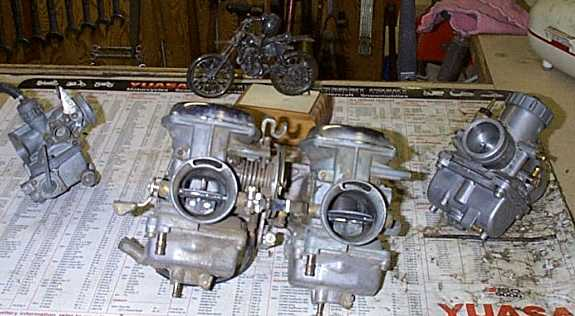
and the midst of it is burned. Is it meet for any work?"
Ezekiel 15:4
¶ Without fuel for the fire that motorcycle engine will simply not be "meet for any work".

First things first. Go get a working fire extinguisher and put it in easy reach. Like right beside the bike you are working on. Trust me... if you work on carburetors and engines long enough you will light yourself,
or an engine, off sooner or later.
If you don't... It is OK... I DON'T CARE!
IT'S NOT MY BODY AND IT WON'T HURT ME AT ALL!
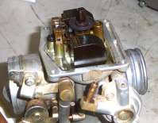 Dirty Carburetor |
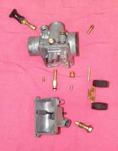 Exploded Carburetor |
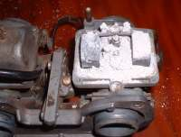 Dirty Carburetor |
Most carburetor problems seem to come, as you might guess, after the machine has set idle for a while. The real cure is to use Gasoline Stabilizer in your gas whenever the bike is going to sit, unused, for a long period of time. However it happens, if you have compression and spark but it still won't start. If the engine only runs with the choke on or the enrichening lever pulled out, you have one or more jets plugged. Notice I said enrichening lever... most of the motorcycle carbs have enrichening passages inside the carburetor that, WHEN THE THROTTLE IS CLOSED, provide the rich air/fuel mixture to start the engine. If you open the throttle any at all it cuts this enrichening out of the system. So if you are having trouble starting, and everything looks ok, see if closing the throttle helps. This does not apply to carburetors with a butterfly choke.

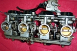
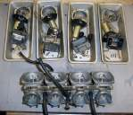
I like to take the top off the carburetor(s) and look at the slide and jet needle first. Usually the slide and Diaphragm are not too bad. I check for holes in the Diaphragm and clean the slide with a shop rag with some spray carburetor cleaner on it. Be careful not to get any cleaner on the rubber Diaphragm.
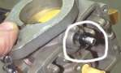
Again, for these reasons most multi carburetor assemblies do not and should not be completely disassembled and dumped into carburetor cleaner. Just disassemble them far enough to do a good cleaning job.
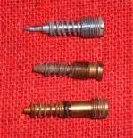
Throttle adjustment screws, sometimes called the throttle stop screw, are normally located at the center of the carburetor on most single cylinder motorcycles. Multi cylinder motorcycles have numerous ways of adjusting the throttle and are usually adjusted on the side of one the carburetors and sometimes in the center between the carburetors.

You will need to remove the Main jet and the Needle jet. The Main jet is usually screwed on to the lower end of the Needle jet, locking it into the carb. Remove the main jet and tap out the needle jet. Do this very carefully. It can break very easily. Sometimes the needle jet will have an O-ring. Remove the O-ring and soak both main jet and needle jet in carburetor cleaner. When you put it back in, there is a pin in the carb body that fits in a grove on the needle jet. Make sure they match up.
Be careful not to strip or break the small idle jet when you try to remove it. It may be necessary to grind the end of a small screwdriver to fit the jet just right. Be aware that some idle jets are pressed in and cannot be removed.
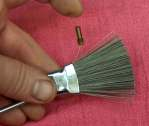

Compressed air works good too, only hold the jet in a shop rag so you do not give yourself an air embolism. I usually squirt some spray can carb cleaner into the carb passages, then blow it through with compressed air. I then look down the throat of the carburetor, as I blow it out, and make sure it comes out where it is supposed to come out, and that those small idle passages are clear. Wear goggles and don't get so close that you get that stuff in your eyes.
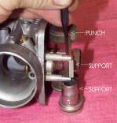
Spray penetrating oil also works good to free up stuck throttle slides too. If the slides have a rubber diaphragm on them, spray carburetor cleaner on a rag and wipe the slide clean. Do not get any carb cleaner on the Diaphragm. It will ruin it. While you have the Diaphragm out inspect it for holes. If you have an engine that has good compression, starts well, but just has no power and revs up, ever so slowly... check that rubber diaphragm... I'll bet it has a hole in it.
When you put the fuel inlet needle back in, put one drop of light oil on it so it will move freely in it's seat and not stick before the gas first starts to fill the bowl.
Don't clean the outside of constant velocity carburetors with spray carburetor cleaner unless you are sure they are not the Rubber Diaphragm type... the cleaner will eat the rubber. There is an all steel piston type of CV carburetor but it's still not a good idea to use the spray because of rubber float bowl gaskets. Notice too, the top seal is a Labyrinth seal.
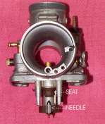 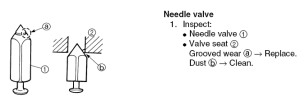
Floats control how much gas there is in the float bowl. The Tang of the float presses on the float needle (fuel inlet needle) letting gas into the float chamber when the level is low and shutting it off when it gets too high. If the Tang is metal, you can adjust the float level by bending it up or down. If it is plastic, it is normally not adjustable. Sometimes, you may run across a plastic float that has a metal insert that is adjustable.
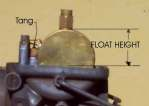

There are many styles of floats. If you have Copper Floats, and the bike has been sitting out in the cold, with the temperature down below freezing, it's possible for water to get into the carb and freeze. This can crush the floats and make the carburetor overflow, when you turn on the gas in the spring. Too high of fuel level can cause the carbs to leak too.
Part of the enrichening circuit is in the main carburetor body and part is in the float bowl. The Enrichening Plunger basically, when it is raised, uncovers a passageway to a very small cast in jet in the float bowl. This little jet can get plugged so when you clean the float bowl, make sure it is clear. I like to put some spray carburetor cleaner down the large passageway and see if it comes out the lower hole. Remember, don't get your eyes too close and "Goggles are your friend." The jet is cast into the lower part of the passageway, hard to see and not removable on most carburetors but not all. Sometimes they are screwed in. Sometimes the jet is in a tube that sticks into the Float Bowl. If it is plugged, the choke will not work.
If the rubber boots and tubes, that connect the carburetor and the air cleaner housing, are old and hard, you should get new ones. However, sometimes they are not available. Try soaking them in carb cleaner. Soaking them will make them soft and pliable. You can soak them from several minutes to twenty minutes or more. Keep checking them till they look and feel right. Too long and it will ruin them. Of course, they are already junk anyway! You can also heat them in boiling water. This works real good, but they harden up real quick when they cool, so work fast. Because of old, hard rubber manifolds and tubes you may have to lever and pry the carburetors off. Be very careful when you do this. Carburetors are pot metal, very weak and easy to break. Lubing things up with Armor All and warming things up gently with a hot air gun can help.
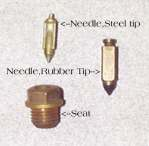
On the side of some carburetors there is another diaphragm that temporarily closes the slow speed jet air passage when the throttle is closed. This richens the fuel mixture, to reduce backfiring, when coming to a stop. Check it for holes and hope you don't have any. They are quite pricey.
At the bottom of some carbs is an accelerator pump, to pump extra fuel when the throttle is opened. On multi-cylinder bikes usually only one carburetor has a pump and it is connected to the throats of the other carburetors by passages or tubing. Check this Diaphragm, also, for holes or cracks.
All new Diaphragms can be expensive and hard to get. I have heard of people using a spray on rubber coating called " Plasti Dip " to fix diaphragms. I have never used it but I hear it works. Get it from NAPA part # 765-2527. Worth a try anyway.
The throttle slide can go in backwards...this jams the throttle wide open... Not Good...make sure it goes in the right way.
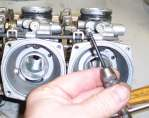
If you can't get it to idle, or rather the idle stays real high then drops off and dies, check for an air leak at the carburetor manifold. Squirt some gas or starting fluid on the manifold and see if the revs change. If they do, you have a leak. If your valves clearances are too tight, it will also effect the idle.
You can make your air /fuel mixture a bit richer or leaner by moving the carburetor needle clip up or down. Move the clip down a notch to raise the needle, to richen the mixture. Move the clip up to lower the needle, to lean out the mixture. The needle is located in the throttle slide.
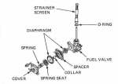
Finally, a word on parts. Use only the carburetors manufacturers brand of parts. Such as Mikuni, Keihin, Bing, Amal, ETC. Do Not use aftermarket carburetor kits or parts. Their quality control is lousy (all of them!) Trust me on this, I speak from way too much experience. I have installed no less then sixteen aftermarket carburetor kits and there will not be a seventeenth. Yes, you are right I am a slow learner (But man, the kits are so cheap!). Oh, how many hours did I waste figuring out which "New" jets were bad? I don't even like to think.
How do you tell if a jet is Genuine Keihin or Mikuni or Bing or Amal or whatever? Simple, each jet will be marked with the Logo of the manufacturer. A "K" for Keihin or a "square within a square" for Mikuni. Bing has a "B", Amal has, well. "AMAL" and so on an so forth. I think you get the Idea. They are proud of their parts. If there is no name... how proud is that?
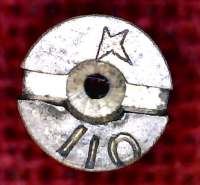 Keihin Logo |
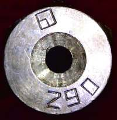 Mikuni Logo |
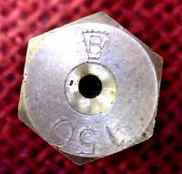 Bing Logo |
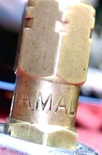 Amal Logo |
Keep your Carburetors clean and they will be "meet for any work".

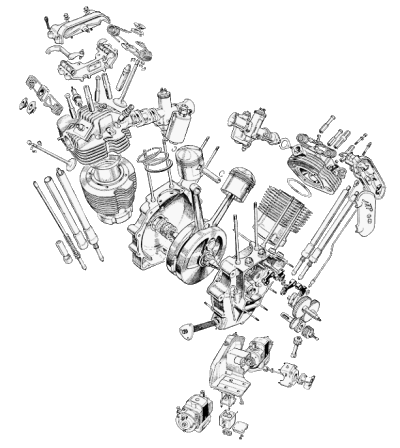 |
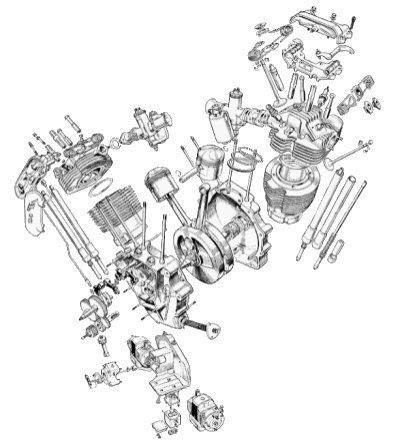 |
Copyright © 1999-2003 dansmc.com. All rights reserved.